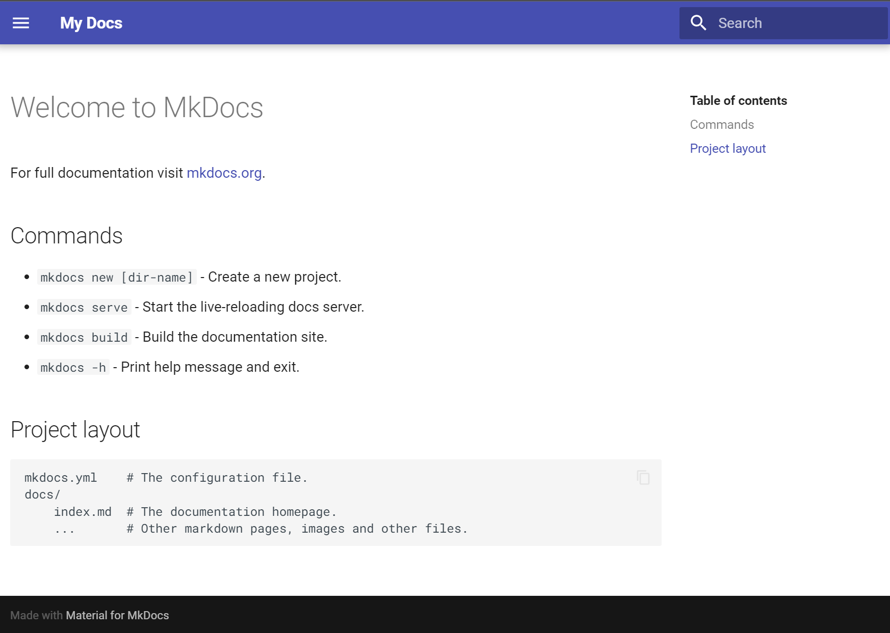
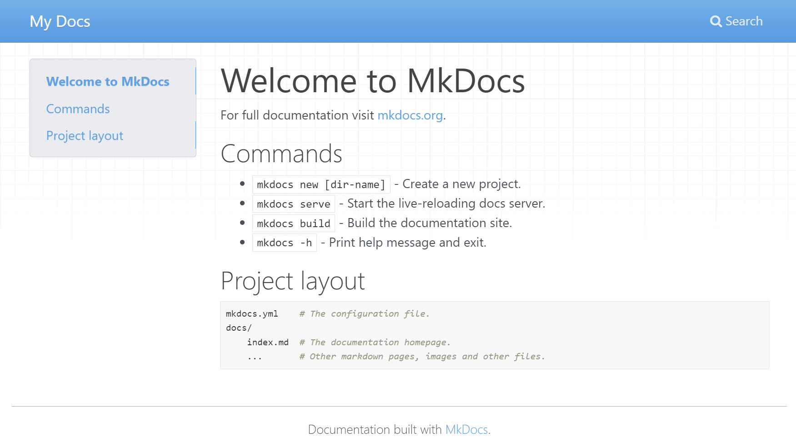
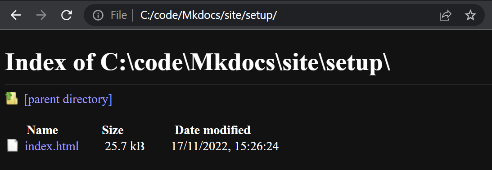
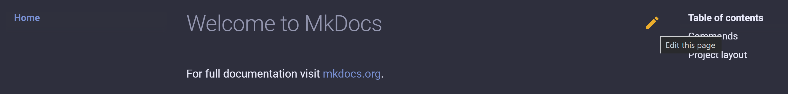

Setup
In a video call, Árni Björnsson showed Móses and me how to set up MkDocs and Git. I've summarized all the steps here, with a few extra resources I found along the way:
MkDocs setup from scratch
First, I installed the VSCode code editor.
Then, as Árni Björnsson suggested, I created a folder called code directly in my C: drive, so that Dropbox and OneDrive don't try to sync the folder and mess up my GitHub connection.
I followed this tutorial to set up MkDocs. There are a few steps to it:
- It starts with installing the Python extension for VSCode.
- The
pippackage manager is included with the Python extension, but for some reason you don't always get the latest version. It may be a good idea to check the version. I opened a new terminal in the top menu in VSCode (Terminal -> New Terminal) and typed and if it says it's out of date you can upgrade pip like this: - Now it was time to install MkDocs:
- Then, as the tutorial suggests, I typed
mkdocs --versionto see if the installation went OK: - (optional) I also installed the Material theme because it seemed nice and it includes expandable code annotations:
Note
To enable notes like this one in MkDocs, I added Admonitions to the extensions in the mkdocs.yml file:
Then, to create a note, start with!!! note and then indent the note text:
MkDocs test drive
I followed this tutorial to set up a small test website and get a live preview.
- After installing Material for MkDocs, I made a folder called Mkdocs. Then I opened a terminal and made sure that it was in the right folder: Then I simply typed and that was enough to create a simple site! Well, there are a few extra steps to view the site and deploy it, but this whole process is very simple.
- Then I added the following lines to mkdocs.yml: This is geared towards the Material theme for MkDocs, so if you're using a different theme, the only thing you need to change is the the theme line in the mkdocs.yml file.
- Set up autocomplete. The tutorial suggests adding a line to settings.json, but it doesn't mention where that file is in VSCode. But it does provide a link to instructions. You go into
File -> Preferences -> Settings, scroll all the way down to Yaml: Schemas, and clickEdit in settings.json. Then you add the line
Then you add the line "https://squidfunk.github.io/mkdocs-material/schema.json": "mkdocs.yml", so in the end it looks like this: - OK, now we're yearning for something to happen. Type the following into the terminal: Now open your browser and write localhost:8000 in the address bar. Voilá! We have a live preview for an MkDocs website!


The source code for this site, written in Markdown, looks like this:
# Welcome to MkDocs
For full documentation visit [mkdocs.org](https://www.mkdocs.org).
## Commands
* `mkdocs new [dir-name]` - Create a new project.
* `mkdocs serve` - Start the live-reloading docs server.
* `mkdocs build` - Build the documentation site.
* `mkdocs -h` - Print help message and exit.
## Project layout
mkdocs.yml # The configuration file.
docs/
index.md # The documentation homepage.
... # Other markdown pages, images and other files.
# gives you the biggest heading, ## gives you heading 2, and so on. Put * in front of text to make a bullet point. To add a link, you do this: [mkdocs.org](https://www.mkdocs.org) and to add an image you do the same, but with an exclamation mark: 
5. Finally, to build a static site, write this in the terminal:
I tried this and got an index page that works fine. But when I clicked the Setup page (this page) I got this:

Hm. Apparently you need to put the structure of the site into your mkdocs.yml file to explicitly state the site navigation. So I opened it up and added
nav:
- 'index.md'
- 'code.md' # The code page is just a few code block tests in different languages.
- 'setup.md'
mkdocs.yml:
It works! And the first solution is unnecessary; MkDocs will infer the site navigation based on the pages you create in the docs folder.
Setting up MkDocs and getting the live preview working took me an hour in the morning. Writing up how I did it took me the rest of the day. It was a great way to learn Markdown. I like Markdown, with one exception; I don't have the ` symbol on my keyboard. I need to use that quite a lot for code snippets. Now this page serves as my reference in writing documentation.
Note
To enable code highlighting (coloring the code, similar to how it looks in the VSCode editor), I added the following lines to mkdocs.yml:
markdown_extensions:
- pymdownx.highlight:
anchor_linenums: true
- pymdownx.inlinehilite
- pymdownx.snippets
- pymdownx.superfences
- pymdownx.details
One more thing, I also added
to add the ability to align images, add captions and mark large images for lazy loading, as per this tutorial.Customizing the theme
There is a way to toggle between light and dark mode. This tutorial says that it's enough to copy the following code into mkdocs.yml:
=== "Light/dark toggle"
``` yaml
theme:
palette:
# Palette toggle for light mode
- scheme: default
toggle:
icon: material/brightness-7
name: Switch to dark mode
# Palette toggle for dark mode
- scheme: slate
toggle:
icon: material/brightness-4
name: Switch to light mode
```
=== "Light/dark toggle + Color change"
``` yaml
palette:
# Palette toggle for light mode
- scheme: default
toggle:
icon: material/brightness-7
name: Switch to dark mode
primary: red
accent: red
# Palette toggle for dark mode
- scheme: slate
toggle:
icon: material/brightness-4
name: Switch to light mode
primary: red
accent: red
```
Note
How to enable content tabs in mkdocs.yaml:
I also discovered that if you select a command, right click and select Change All Occurrences in VSCode, you only need to write the new color once, instead of four times. Nice!
Finally, I made a logo in Inkscape. I designed this logo in grade school, it's a kind of Icelandic rune that combines my initials S and K. Then I added two lines to mkdocs.yml to change the logo in the top left corner and also the favicon (the icon you see in the browser tab).
/images/SK_logo.SVG and VSCode complained about the formatting. I found that you can right click the image and select Copy Relative Path to get the right formatting. That gave me docs\images\SK_logo.svg, which didn't work, but when I changed it to images\SK_logo.svg it worked.
I also enabled two navigation options:
theme:
features:
- navigation.instant # Instant loading (page behaves like a single-page application, search persists between pages)
- navigation.tabs # The pages are visible as tabs at the top instead of on the left hand side.
GitHub setup
To set up a GitHub connection, I followed this official VSCode tutorial and installed the GitHub Pull Requests and Issues extension. I was supposed to sign in but no sign in button appeared when I selected the GitHub icon in the left menu bar in VSCode. I did some more Googling and found an unofficial tutorial that told me to sign in via the Accounts symbol in the bottom left corner of VSCode. I selected Turn on edit sessions sync and signed in with Github in a browser. Then I was redirected to VSCode, but that wasn't the end of it. I selected Accounts again and there an option to sign in to the Github extension appeared. I selected that, signed in in the browser and now I was finally signed in and could continue with the GitHub setup. But the the official tutorial didn't tell me how to get files from my computer to GitHub. I needed to look elsewhere. I threw my hands up in the air and Googled i have code on my computer how do i create github repository. The first result was this official GitHub guide. The third step resulted in an error: The token '&&' is not a valid statement separator in this version. What then? I like MkDocs so far but I don't like Git so far. Let's see what this tutorial gets me:
PS C:\code\Mkdocs> git init -b main
Initialized empty Git repository in C:/code/Mkdocs/.git/
PS C:\code\Mkdocs> git status
On branch main
No commits yet
Untracked files:
(use "git add <file>..." to include in what will be committed)
docs/
mkdocs.yml
site/
nothing added to commit but untracked files present (use "git add" to track)
PS C:\code\Mkdocs> git commit
On branch main
Initial commit
Untracked files:
(use "git add <file>..." to include in what will be committed)
docs/
mkdocs.yml
site/
nothing added to commit but untracked files present (use "git add" to track)
PS C:\code\Mkdocs> git push
fatal: No configured push destination.
Either specify the URL from the command-line or configure a remote repository using
git remote add <name> <url>
and then push using the remote name
git push <name>
PS C:\code\Mkdocs> git remote add Mkdocs https://github.com/svavarkonn/MkDocs
PS C:\code\Mkdocs> git push Mkdocs
fatal: The current branch main has no upstream branch.
To push the current branch and set the remote as upstream, use
git push --set-upstream Mkdocs main
To have this happen automatically for branches without a tracking
upstream, see 'push.autoSetupRemote' in 'git help config'.
PS C:\code\Mkdocs> git remote add mkdocs.yml https://github.com/svavarkonn/MkDocs
PS C:\code\Mkdocs> git remote add site https://github.com/svavarkonn/MkDocs
PS C:\code\Mkdocs> git remote add docs https://github.com/svavarkonn/MkDocs
PS C:\code\Mkdocs> git push MkDocs
error: src refspec refs/heads/main does not match any
error: failed to push some refs to 'MkDocs'
Page source
The Markdown code for the View page Source button is like this:
I'm going to put it on every page of my documentation. If you see an interesting element in the page, you can then easily see how to set it up. Pointing to a.md file doesn't work, so my workaround is to make a copy of the Markdown source file and change its extension to .txt.
I made a Python script using this tutorial and put it in the MkDocs folder. The script copies all the .md files in the docs folder to another folder called textfiles and converts their extension to .txt.
To change the theme for just the home page, I followed tmeuze's advice in this issue. To mkdocs.yml I added
docs/overrides folder. Then I was unsure how to set up a custom theme, so I stopped there.
To enable the Github Repository button in the top right corner, I followed this example and added the following to my mkdocs.yml, just below site_name:
I added
so that the URL in the address bar changes as you scroll down the page. If you copy the URL, the page will open in the section where you were when you copied it. Might be convenient if someone wants to cite something on this site.I also added
to make the top navigation follow you as you scroll down the page.By default, an "Edit this page" symbol is added to the right of the headline of every page.  When you click it you just get a 404 error. I followed [this] to remove the edit button. I just add
to the .md file of each page and voilá! The edit button disappears.